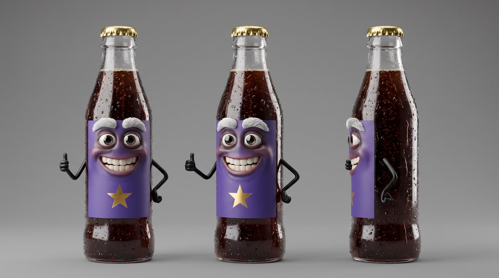
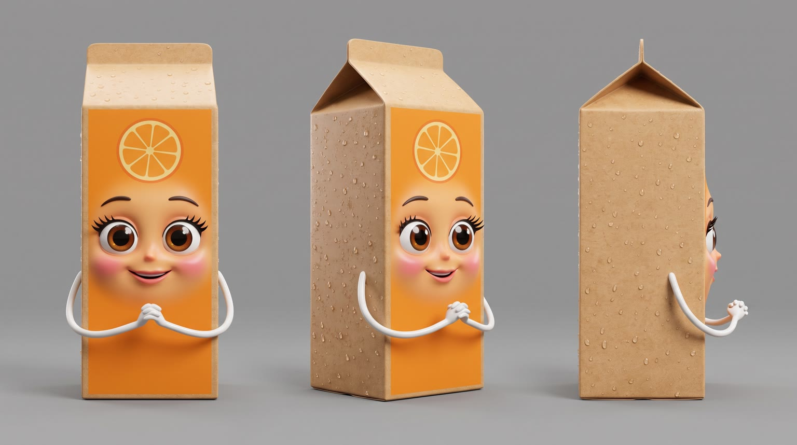
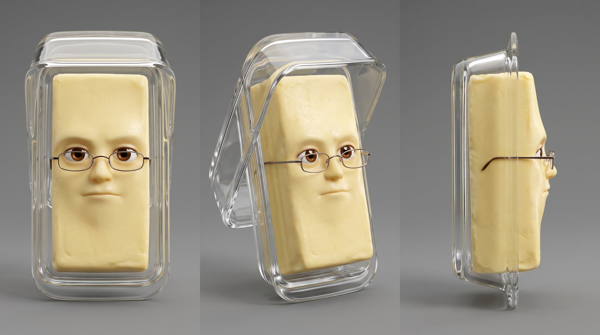
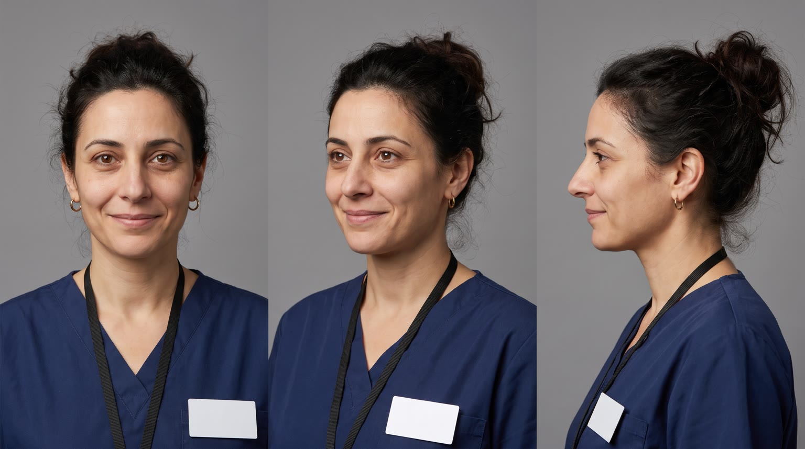
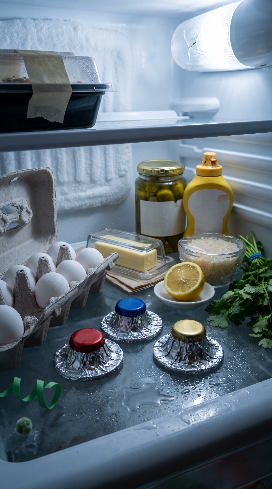
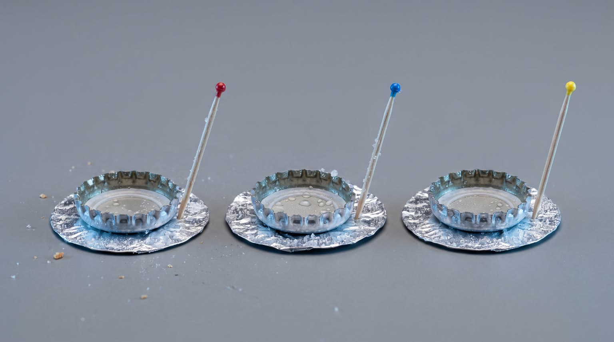
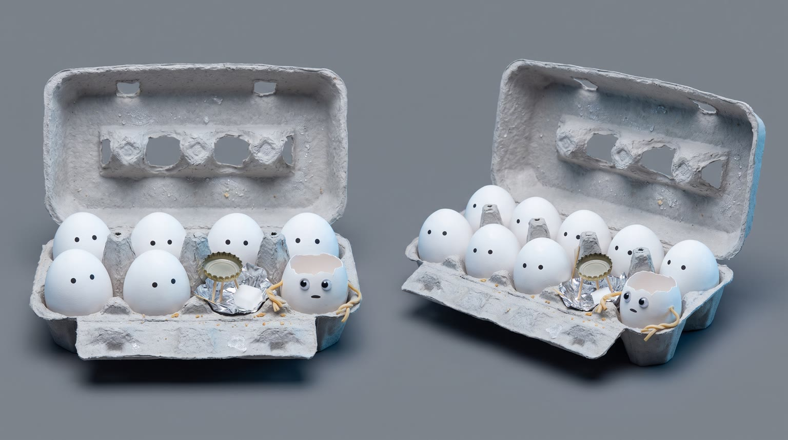

All templates · template.json · original storyboard
Talking objectstalking_objects-01-fridge-politicsFridge Politics
Midnight in the house: wherever things of one kind live, they hold an election. The loud rival promises more of the old flaw, the wholesome one sounds nice, and the quiet candidate is {{product.name}}. Then a real voter opens the door.
Fit by product type
| ingested | great | the fridge election is fully rendered (rivals, moderator, audience, venue) and bottles, pouches or snacks slot straight in; the cap or tab is a natural mouth |
| applied | good | the bathroom-cabinet election; tubes, pumps, jars and droppers all have a cap or nozzle for a mouth; rival and venue cards must be generated per product |
| worn | good | the hall-closet election; shoes and garments talk through their collar opening, glasses and watches with hops; rival and venue cards must be generated per product |
| handheld | good | the junk-drawer election; cases and gadgets talk through a lid or hinge, screens and lenses stay clean; rival and venue cards must be generated per product |
| carried | great | the coat-hook election; a zip is the most natural mouth there is and bags hang like candidates at podiums; rival and venue cards must be generated per product |
| home | stretch | the living-room election at real room scale; lamps, speakers, pillows and chairs work, but room-scale objects are harder to animate and she must sit on or switch on the product rather than pick it up |
| consumable | good | the pantry election; box flaps and tear strips make easy mouths; rival and venue cards must be generated per product |
Refuses: products for children; alcohol; products whose front is a screen or print that would have to carry the face; comparisons that name or visually echo a real competitor
Cast, world and props (shipped with the template)







- The house belongs to Marisol Vega, a small place in San Antonio where almost everything was bought second-hand in 2014; the fridge door seal is so tired that frost builds on the back wall.
- Every night at midnight, wherever things of one kind live in this house (shelf two of the fridge, the bathroom cabinet, the hall closet, the junk drawer, the coat hooks, the living room, the pantry), they hold an election. Whoever the voter picks goes with her; everyone else waits another night.
- Buck has won nine elections in a row, mostly on weekends, and has never once been picked for a work night.
- The audience is always one short: an egg went into this morning's omelette, a cotton bud or a sock went missing. The empty spot sits in the front row.
- Marisol starts a twelve-hour night shift at 12:30am at the fictional St. Aldric Hospital. Whoever she picks tonight goes with her until dawn.
Script: what each line must do
Right column is the worked example for Red Bull Sugarfree.
| Time | Speaker | Intent (template) | Example |
|---|---|---|---|
| 0.3-2.7 | buck | Hook: the loud rival proudly promises the exact opposite of the benefit the product will claim in L4 (more of what the product leaves out, or the old-school flaw of the category), opening with a stump-speech address to the audience. a generic category flaw only (heavier, stickier, more tangled, itchier, flimsier, more of what the product leaves out); never a health, safety or medical claim about the rival; never a real competitor's slogan Max 8 words. Delivery: booming stump-speech, fist pump, crowd-baiting | My fellow leftovers! More sugar for everyone! |
| 2.9-4.8 | brenda | The second rival's pitch: the wholesome-sounding alternative in her category, played for a laugh because it sounds good and misses the point. no claim about any real product; the joke is her smugness, not a fact Max 7 words. Delivery: syrupy-sweet, a little smug, fluttering lashes | Vote for me. I'm basically breakfast. |
| 5.2-6.6 | pat | The moderator hands the floor to the product, calling it by its look in 2 or 3 words (a colour plus what it is, e.g. the little blue tube, the grey one). never the brand name; a question Max 5 words. Delivery: deadpan news anchor, peering over his glasses | And the silver can? |
| 9.4-12.4 | product | Product line: the product says {{product.name}} (or its short spoken form) and its ONE benefit from product.benefits, calm and confident, the direct answer to Buck's promise. benefit comes only from product.benefits, reworded no further than person and tense; brand spelled phonetically in the video prompt using product.phonetic Max 8 words. Delivery: cool, dry, unbothered, its mouth-opening moving as it talks (or small hops if it has none) | Red Bull Sugarfree. Same benefits. No sugar. |
| 13.0-14.8 | buck | Fixed: Ha! Nobody picks the quiet one. Max 7 words. Delivery: scoffing belly laugh | Ha! Nobody picks the quiet one. |
| 16.8-18.8 | marisol | The real user states her need in her own words before a twelve-hour night shift, the need that L4's benefit answers (long shift, on my feet all night, dry ward air, a cold car park, an early start), without promising anything. a need, not a claim; no product name Max 7 words. Delivery: tired, to herself, rubbing her eye | Long shift. I need to focus. |
| 22.8-24.4 | pat | Fixed: The people have spoken! Max 5 words. Delivery: losing his anchor cool, delighted | The people have spoken! |
| 25.0-25.7 | buck | Fixed: Recount? Max 2 words. Delivery: small, deflated, to Brenda | Recount? |
| 27.4-29.4 | product (off camera) | Tagline: product.tagline if the page has one, otherwise a 3 to 5 word line in the product's cool voice that ties it to being the one she picked. Max 6 words. Delivery: cool, a smile in the voice, after a wink | Wiiings without sugar. |
Product-adjacent props by type
| ingested | shelf two of the fridge, the product chilled with condensation beside the two rivals |
| applied | the middle shelf of the bathroom mirror cabinet beside the cream tub and the lotion pump |
| worn | the hall closet: the shoe rack for footwear, the hanging rail for clothes and accessories |
| handheld | the kitchen junk drawer among batteries, tape and rubber bands |
| carried | the brass coat hooks by the front door |
| home | the living room at real room scale, the product in the moonlight on the rug |
| consumable | the pantry cupboard shelf among jars and tins with blank labels |
Shots and how the product appears for each type
S01 · 0 to 2.8 s · absent
Buck, the loud rival, stands on the first podium, noodle arm raised in a fist pump, mid stump speech.
S02 · 2.8 to 5.0 s · absent
Brenda, the wholesome rival, at the next podium, lashes fluttering, noodle hands clasped, smug.
S03 · 5.0 to 7.0 s · absent
Moderator Pat peers over his glasses; the audience turns to look.
S04 · 7.0 to 9.0 s · reveal
The product enters the third podium spot, its eyes rising over its top edge, cool and confident.
| ingested | {{product.visual}} sliding upright across the wet glass shelf into the third podium spot, trailing a puff of cold mist, label facing camera, condensation beads; its only face is two small glossy animated eyes with tiny floating brows peeking over its top edge, sitting on the lid, cap or top seal; its existing opening (a pull tab, a bottle cap, a pouch spout, a wrapper's tear notch) moves as its mouth, its eyes rising over the top edge |
| applied | {{product.visual}} gliding upright along the glass cabinet shelf into the third podium spot, label facing camera; its only face is two small glossy animated eyes with tiny floating brows peeking over its top edge, sitting on the cap, pump head or top crimp; its existing opening (a flip-cap hinge, a pump nozzle, a dropper bulb, a jar lid lifting like a jaw) moves as its mouth, its eyes rising over the top edge |
| worn | {{product.visual}} hopping neatly into the third spot on the shoe rack (or swinging into the third place on the closet rail), its best side to camera; its only face is two small glossy animated eyes with tiny floating brows peeking over its top edge (the top of a shoe's tongue, the collar of a garment, the top bar of a glasses frame, the case edge above a watch dial); its existing opening (the ankle collar, the neck opening, a cuff) moves as its mouth, and if it has no opening it talks with small hops and tilts, its eyes rising over the top edge |
| handheld | {{product.visual}} sliding across the drawer bottom into the third podium spot, logo facing camera; its only face is two small glossy animated eyes with tiny floating brows peeking over its top edge; an existing hinge or opening (a case lid, a cap, a flip cover, a charging port) moves as its mouth, and if it has none it talks with small hops, tilts or a pulse of its own light, its eyes rising over the top edge |
| carried | {{product.visual}} swinging gently onto the third brass coat hook by its strap or handle, logo facing camera; its only face is two small glossy animated eyes with tiny floating brows peeking over its top edge at the base of the handle or the ends of the top zip; the main zip or flap parting a little moves as its mouth, its eyes rising over the top edge |
| home | {{product.visual}} at its true room size settling into the third spot on the rug in a pool of moonlight, its best side to camera; its only face is two small glossy animated eyes with tiny floating brows peeking over its top edge (the rim of a shade, the top of the back cushions, the edge of a lid, the top seam of a pillow); an existing opening or gap (a lid, a spout, the gap between seat cushions, a seam) moves as its mouth, and if it has none it talks with a small tilt or a pulse of its own light, its eyes rising over the top edge |
| consumable | {{product.visual}} sliding out from behind the flour jar into the third podium spot on the pantry shelf, label facing camera; its only face is two small glossy animated eyes with tiny floating brows peeking over the top flap or seal of its pack; the top flap or tear strip moves as its mouth, its eyes rising over the top edge |
S05 · 9.0 to 12.8 s · hero
Hero close-up: the product at its podium, front to camera, eyes over its top edge, its opening moving as it talks, calm.
| ingested | {{product.visual}} standing upright on the glass shelf, label facing camera, frosty condensation beads; its only face is two small glossy animated eyes with tiny floating brows peeking over its top edge, sitting on the lid, cap or top seal; its existing opening (a pull tab, a bottle cap, a pouch spout, a wrapper's tear notch) moves as its mouth, its mouth mid-word, calm confident brows |
| applied | {{product.visual}} standing upright on the glass cabinet shelf, label facing camera; its only face is two small glossy animated eyes with tiny floating brows peeking over its top edge, sitting on the cap, pump head or top crimp; its existing opening (a flip-cap hinge, a pump nozzle, a dropper bulb, a jar lid lifting like a jaw) moves as its mouth, its mouth mid-word, calm confident brows |
| worn | {{product.visual}} standing on the shoe rack or hanging on the closet rail, its front to camera; its only face is two small glossy animated eyes with tiny floating brows peeking over its top edge (the top of a shoe's tongue, the collar of a garment, the top bar of a glasses frame, the case edge above a watch dial); its existing opening (the ankle collar, the neck opening, a cuff) moves as its mouth, and if it has no opening it talks with small hops and tilts, its mouth mid-word, calm confident brows |
| handheld | {{product.visual}} standing or lying front up on the drawer bottom, logo facing camera; its only face is two small glossy animated eyes with tiny floating brows peeking over its top edge; an existing hinge or opening (a case lid, a cap, a flip cover, a charging port) moves as its mouth, and if it has none it talks with small hops, tilts or a pulse of its own light, its mouth mid-word, calm confident brows |
| carried | {{product.visual}} hanging from the third brass coat hook, logo facing camera; its only face is two small glossy animated eyes with tiny floating brows peeking over its top edge at the base of the handle or the ends of the top zip; the main zip or flap parting a little moves as its mouth, its mouth mid-word, calm confident brows |
| home | {{product.visual}} at its true room size on the rug in the moonlight, its best side to camera; its only face is two small glossy animated eyes with tiny floating brows peeking over its top edge (the rim of a shade, the top of the back cushions, the edge of a lid, the top seam of a pillow); an existing opening or gap (a lid, a spout, the gap between seat cushions, a seam) moves as its mouth, and if it has none it talks with a small tilt or a pulse of its own light, its mouth mid-word, calm confident brows |
| consumable | {{product.visual}} standing upright on the pantry shelf, label facing camera; its only face is two small glossy animated eyes with tiny floating brows peeking over the top flap or seal of its pack; the top flap or tear strip moves as its mouth, its mouth mid-word, calm confident brows |
S06 · 12.8 to 15.0 s · absent
Buck throws his head back in a scoffing belly laugh, arms on his sides like hands on hips.
S07 · 15.0 to 16.6 s · background
[opening]: warm light floods in and every object freezes into an ordinary object, faces neutral and still.
| ingested | {{product.visual}} frozen in the third spot on the fridge shelf, label facing camera, its two small eyes on its top edge fixed and still, its mouth-opening shut, the only one of the product |
| applied | {{product.visual}} frozen in the third spot on the cabinet shelf, label facing camera, its two small eyes on its top edge fixed and still, its mouth-opening shut, the only one of the product |
| worn | {{product.visual}} frozen in the third spot on the shoe rack or closet rail, its front to camera, its two small eyes on its top edge fixed and still, its mouth-opening shut, the only one of the product |
| handheld | {{product.visual}} frozen in the third spot in the drawer, logo facing camera, its two small eyes on its top edge fixed and still, its mouth-opening shut, the only one of the product |
| carried | {{product.visual}} frozen on the third coat hook, logo facing camera, its two small eyes on its top edge fixed and still, its mouth-opening shut, the only one of the product |
| home | {{product.visual}} frozen at its true room size in the third spot on the rug, its best side to camera, its two small eyes on its top edge fixed and still, its mouth-opening shut, the only one of the product |
| consumable | {{product.visual}} frozen in the third spot on the pantry shelf, label facing camera, its two small eyes on its top edge fixed and still, its mouth-opening shut, the only one of the product |
S08 · 16.6 to 19.4 s · absent
From the venue's point of view: Marisol in navy scrubs, lit by the warm light, tired, rubbing one eye, looking in.
S09 · 19.4 to 22.6 s · in_use
She chooses the product: past the frozen Buck and Brenda, it comes off its podium into her hand (or she sinks into it or switches it on at room scale).
| ingested | a woman's hand with short nails and a navy scrubs sleeve reaching in past the frozen rivals and closing around {{product.visual}}, lifting it upright off the fridge shelf, label facing camera, fingers around its back; its two small eyes on its top edge wide with a hint of delight |
| applied | a woman's hand with short nails and a navy scrubs sleeve reaching past the frozen rivals and lifting {{product.visual}} off the cabinet shelf, label facing camera, fingers around its back; its two small eyes on its top edge wide with a hint of delight |
| worn | a woman's hand with short nails and a navy scrubs sleeve reaching past the frozen rivals and lifting {{product.visual}} off the shoe rack or closet rail, its best side to camera; its two small eyes on its top edge wide with a hint of delight |
| handheld | a woman's hand with short nails and a navy scrubs sleeve reaching down past the frozen rivals and lifting {{product.visual}} out of the drawer, logo facing camera, fingers around its back; its two small eyes on its top edge wide with a hint of delight |
| carried | a woman's hand with short nails and a navy scrubs sleeve unhooking {{product.visual}} from the third coat hook by its strap or handle, past the frozen rivals, logo facing camera; its two small eyes on its top edge wide with a hint of delight |
| home | Marisol in navy scrubs walking past the frozen rivals and sinking into, switching on or picking up {{product.visual}} at its true room size, its best side to camera; its two small eyes on its top edge wide with a hint of delight |
| consumable | a woman's hand with short nails and a navy scrubs sleeve reaching past the frozen rivals and taking {{product.visual}} (or one from its pack) off the pantry shelf, label facing camera; its two small eyes on its top edge wide with a hint of delight |
S10 · 22.6 to 26.0 s · absent
Closed again, the empty third podium; the audience erupts cheering, Pat flips up like a thrown hat, Buck turns to Brenda deflated.
S11 · 26.0 to 30 s · hero
By the front door at night: the product beside her keys and blank ID lanyard, front to camera, gives one slow wink. Tagline and pack shot.
| ingested | {{product.visual}} standing upright on the small table by the front door beside her house keys and a plain lanyard with a blank badge, label facing camera, fresh condensation beads; its only face is two small glossy animated eyes with tiny floating brows peeking over its top edge, sitting on the lid, cap or top seal; its existing opening (a pull tab, a bottle cap, a pouch spout, a wrapper's tear notch) moves as its mouth, one eye closed in a slow wink |
| applied | {{product.visual}} standing upright on the small table by the front door beside her house keys and a plain lanyard with a blank badge, label facing camera; its only face is two small glossy animated eyes with tiny floating brows peeking over its top edge, sitting on the cap, pump head or top crimp; its existing opening (a flip-cap hinge, a pump nozzle, a dropper bulb, a jar lid lifting like a jaw) moves as its mouth, one eye closed in a slow wink |
| worn | {{product.visual}} set on the hallway bench by the front door beside her house keys and a plain lanyard with a blank badge, its best side to camera, ready to put on; its only face is two small glossy animated eyes with tiny floating brows peeking over its top edge (the top of a shoe's tongue, the collar of a garment, the top bar of a glasses frame, the case edge above a watch dial); its existing opening (the ankle collar, the neck opening, a cuff) moves as its mouth, and if it has no opening it talks with small hops and tilts, one eye closed in a slow wink |
| handheld | {{product.visual}} resting on the small table by the front door beside her house keys and a plain lanyard with a blank badge, logo facing camera; its only face is two small glossy animated eyes with tiny floating brows peeking over its top edge; an existing hinge or opening (a case lid, a cap, a flip cover, a charging port) moves as its mouth, and if it has none it talks with small hops, tilts or a pulse of its own light, one eye closed in a slow wink |
| carried | {{product.visual}} hanging from the front door handle ready to go, her keys and a plain lanyard with a blank badge clipped to it, logo facing camera; its only face is two small glossy animated eyes with tiny floating brows peeking over its top edge at the base of the handle or the ends of the top zip; the main zip or flap parting a little moves as its mouth, one eye closed in a slow wink |
| home | {{product.visual}} at its true room size in the dim living room, her keys and a plain lanyard with a blank badge dropped beside it, the hallway light on behind; its only face is two small glossy animated eyes with tiny floating brows peeking over its top edge (the rim of a shade, the top of the back cushions, the edge of a lid, the top seam of a pillow); an existing opening or gap (a lid, a spout, the gap between seat cushions, a seam) moves as its mouth, and if it has none it talks with a small tilt or a pulse of its own light, one eye closed in a slow wink |
| consumable | the pack of {{product.visual}} on the small table by the front door beside her house keys and a plain lanyard with a blank badge, label facing camera; its only face is two small glossy animated eyes with tiny floating brows peeking over the top flap or seal of its pack; the top flap or tear strip moves as its mouth, one eye closed in a slow wink |
Generation units (templated prompts)
U1 · 9 s
9:16 photoreal macro in [venue] at midnight (real room scale for the living room), everyday objects with expressive 3D animated faces, [night light]. Shot 1 (0 to 2.8 s): the venue's light clicks on; @Image1 (Buck, the loud purple-labelled rival with a politician's face) on [podium], fist-pumping with a noodle arm, booming: "{{line.L1}}" Shot 2 (2.8 to 5 s): @Image2 (Brenda, the orange rival with lashes) at the next podium, sweetly smug: "{{line.L2}}" Shot 3 (5 to 7 s): @Image3 (Pat, the moderator with reading glasses), deadpan, as [audience] turn to look: "{{line.L3}}" Shot 4 (7 to 9 s): {{action.S04}}; the product matches @Image5 exactly and has no face on its label. Native sound: the venue's hum, a light click, audience murmurs. No music. No text, labels blank except the product.U2 · 6 s · exact-risk
9:16 photoreal macro in [venue]. Shot 1 (0 to 3.8 s): slow push-in, camera 10 to 20 degrees above the top edge, on {{action.S05}}; it says, cool and dry (a woman's voice): "{{line.L4}}" (say the brand as {{product.phonetic}}). Its label and front never move, bend or grow a face; only its eyes and its existing opening move. Shot 2 (3.8 to 6 s): @Image2 (Buck) tilts back in a scoffing belly laugh: "Ha! Nobody picks the quiet one." Keep the product's shape, colours and label exactly as @Image1. Native sound: the venue's hum, one gasp from the audience, the laugh. No music.U3 · 11 s
9:16 photoreal. Shot 1 (0 to 1.6 s): [opening], [warm light] floods the venue and every object freezes like an ordinary object, faces neutral and still; {{action.S07}}. Shot 2 (1.6 to 4.4 s): low POV [pov]: @Image1 (Marisol, a tired nurse in navy scrubs) looks in, rubs her eye, to herself: "{{line.L6}}" Shot 3 (4.4 to 7.6 s): {{action.S09}}, past the frozen @Image2 (Buck) and @Image3 (Brenda); the product matches @Image6 exactly, undistorted. Shot 4 (7.6 to 11 s): the venue closes, dark, the night light clicks back on; [audience] erupt cheering, @Image4 (Pat) flips up like a thrown hat: "The people have spoken!" Buck turns to Brenda, deflated: "Recount?" Objects only move while the venue is closed. Native sound: the opening, house room tone, a clink or creak, the closing, cheering. No music. No text.U4 · 5 s · exact-risk
9:16 photoreal pack shot by the front door at night. Slow push-in, camera 10 to 20 degrees above the top edge, on {{action.S11}}; the product matches @Image1 exactly and does not move, bend or grow a face on its label. Clean dark space above it. Native sound: keys jingling off screen, a door opening to night crickets. No music, no text.